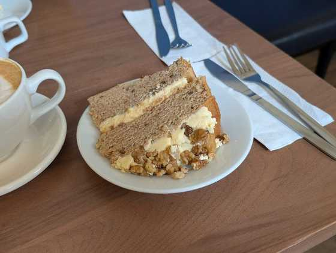
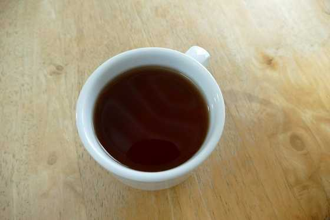
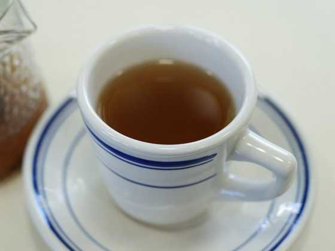
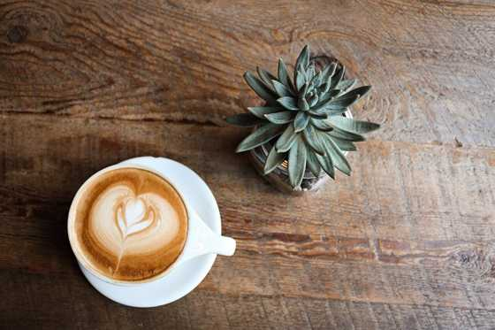
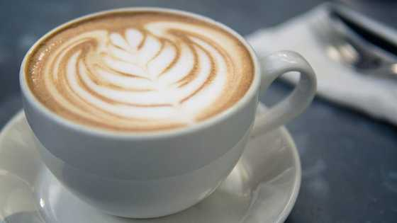
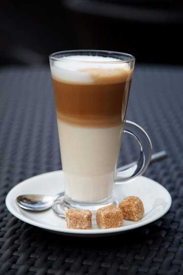

北海道伊達市末永町のカフェ。ケーキや焼き菓子、あたたかい飲み物とともに、ひと息つく時間をイメージしました。
※このコンセプトは制作側のイメージです。お店の公式な言葉ではありません。
アクセスを見る
ケーキと飲み物の組み合わせを選ぶのが楽しい時間でした。昼下がりにゆっくりできそうです。
制作側が作成した例文です。実際のお客様の声ではありません。
ひとりでふらっと立ち寄っても、落ち着いて過ごせる雰囲気を想像しました。
制作側が作成した例文です。実際のお客様の声ではありません。
甘いものが好きな友人と、また行きたいと思えるお店というイメージです。
制作側が作成した例文です。実際のお客様の声ではありません。
カフェリムは、北海道伊達市末永町にあるカフェです(Instagramプロフィールに「カフェ リム」と記載)。店名の由来やお店の成り立ちは、公開情報では確認できませんでした。
営業時間などはInstagramで案内されているようですが、変更される場合があるため、お出かけ前にInstagramで最新情報をご確認ください。電話番号・定休日・価格は準備中です。





Instagram: @cafe_limu
写真はすべてフリー素材(Wikimedia Commons等)のイメージで、縮小・切り抜きの加工をしています。